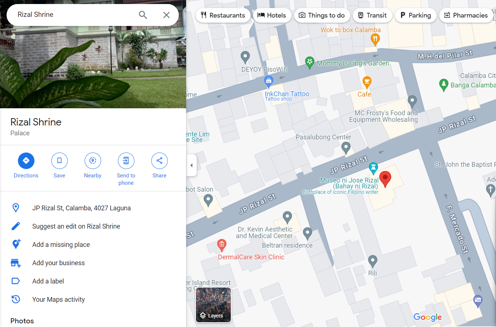

Discovering the life and Works of
JOSE RIZAL
WHO IS JOSE RIZAL?
José Protacio Rizal Mercado y Alonso Realonda
José Rizal, born José Protacio Rizal Mercado y Alonso Realonda on June 19, 1861, in Calamba, Laguna, Philippines, was a Filipino nationalist, writer, and revolutionary. In his early life, Rizal was a precocious child, showing exceptional intelligence and talent. He came from a prosperous family with a mixed heritage of Filipino, Chinese, Spanish, and Japanese ancestry.
JOSE RIZAL'S FAMILY
The Rizals is considered one of the biggest families during their time. Domingo Lam-co, the family's paternal ascendant was a full-blooded Chinese who came to the Philippines from Amoy, China in the closing years of the 17th century and married a Chinese half-breed by the name of Ines de la Rosa. Researchers revealed that the Mercado-Rizal family had also traces of Japanese, Spanish, Malay and Even Negrito blood aside from Chinese. Jose Rizal came from a 13-member family consisting of his parents, Francisco Mercado II and Teodora Alonso Realonda, and nine sisters and one brother.
JOSE RIZAL'S PARENTS
Francisco Mercado
Francisco Mercado was the father of José Rizal, the national hero of the Philippines. He was a prosperous farmer and landowner from Biñan, Laguna, which is located in the Philippines. Francisco Mercado played a significant role in shaping Rizal's upbringing and education. He instilled in his son the values of hard work, integrity, and education, which were reflected in Rizal's later endeavors as a scholar, writer, and advocate for Philippine independence.
Teodora Alonso Realonda
Teodora Alonso Realonda was the mother of José Rizal, the national hero of the Philippines. She was born on November 9, 1827, in Manila, Philippines, to a wealthy and influential family. Teodora Alonso Realonda was known for her intelligence, strong character, and devotion to her family.
Despite facing challenges and adversity, including false accusations and imprisonment, Teodora remained resilient and continued to support her children's education and aspirations. She played a crucial role in shaping José Rizal's character and instilling in him values such as patriotism, resilience, and the importance of education.
Teodora Alonso Realonda's influence on José Rizal's life is widely recognized, and her story is celebrated as part of the narrative surrounding Rizal's contributions to Philippine history and independence.
JOSE RIZAL'S SIBLINGS

Saturnina Rizal(1850–1913)
Eldest sibling, married Manuel Timoteo Hidalgo, known for her nurturing nature.

Paciano Rizal(1851–1930)
José Rizal's brother, played a significant role in the Philippine Revolution, providing support and resources.
Narcisa Rizal(1852–1939)
Talented artist and musician, married Antonio Lopez, became a respected teacher.
Olympia Rizal(1855–1887)
Passed away young from childbirth, remembered for her gentle demeanor.

Lucia Rizal(1857–1919)
Known for her strong spirit, married Matriano Herbosa, served as an inspiration to her siblings.

Maria Rizal(1859–1945)
Gentle and nurturing, married Daniel Faustino Cruz, dedicated to family and community.

Jose Rizal (1861-1896)
National hero, advocate for Philippine independence and social reform through his writings and activism.

Concepción Rizal (1862-1865)
Passed away at a young age, cherished by her family.

Josefa Rizal (1865-1945)
Faced challenges due to epilepsy, remained close to her family and provided support.
Trinidad Rizal (1868-1951)
Longest-lived sibling, unmarried, remembered for her wisdom and kindness.

Soledad Rizal (1870-1929)
Youngest sibling, married Pantaleon Quintero, known for her vivacious personality and warmth.
EARYLY CHILDHOOD
1861
José Rizal was born on June 19, 1861, in Calamba, Laguna province, to Francisco Rizal Mercado y Alejandro and Teodora Alonso Realonda y Quintos.
Patrilineal Lineage
Rizal's patrilineal lineage traced back to Fujian, China, through his father's ancestor Lam-co, who migrated to the Philippines in the late 17th century. Lam-co later converted to Catholicism and changed his name to Domingo Mercado.
Maternal Ancestry
Rizal's maternal ancestry included Chinese, Tagalog, and Spanish roots. His mother, Teodora Alonso Realonda, descended from the affluent Florentina family of Chinese mestizos from Baliuag, Bulacan. He also had Spanish ancestry through his maternal grandmother, Regina Ochoa, and Japanese ancestry through his maternal great-great-grandfather, Eugenio Ursua.
Early Education and Name Change
José Rizal exhibited a precocious intellect from an early age, learning the alphabet at 3 and reading and writing by age 5. He enrolled at the Ateneo Municipal de Manila, where he dropped the last three names of his full name on the advice of his brother, Paciano, and the Mercado family. This rendered his name as "José Protasio Rizal" to enable him to travel freely and disassociate him from his brother's notoriety.
1891
By 1891, Rizal had gained fame as a poet, essayist, and novelist, earning recognition for his facility with Castilian and other foreign languages. His second surname, Rizal, became well-known, symbolizing persecution. Rizal embraced the name, stating his desire to be worthy of the family name.
22 June 1861
He was baptized JOSE RIZAL MERCADO at the Catholic of Calamba by the parish priest Rev. Rufino Collantes with Rev. Pedro Casañas as the sponsor.
28 September 1862
The parochial church of Calamba and the canonical books, including the book in which Rizal’s baptismal records were entered, were burned.
1864
Barely three years old, Rizal learned the alphabet from his mother.
1865
When he was four years old, his sister Conception, the eight child in the Rizal family, died at the age of three. It was on this occasion that Rizal remembered having shed real tears for the first time.
1865 – 1867
During this time his mother taught him how to read and write. His father hired a classmate by the name of Leon Monroy who, for five months until his (Monroy) death, taught Rizal the rudiments of Latin.
At about this time two of his mother’s cousin frequented Calamba. Uncle Manuel Alberto, seeing Rizal frail in body, concerned himself with the physical development of his young nephew and taught the latter
love for the open air and developed in him a great admiration for the beauty of nature, while Uncle Gregorio, a scholar, instilled into the mind of the boy love for education. He advised Rizal: "Work hard
and perform every task very carefully; learn to be swift as well as thorough; be independent in thinking and make visual pictures of everything."
6 June 1868
With his father, Rizal made a pilgrimage to Antipolo to fulfill the vow made by his mother to take the child to the Shrine of the Virgin of Antipolo should she and her child survive the ordeal of delivery which nearly caused his mother’s life.
From there they proceeded to Manila and visited his sister Saturnina who was at the time studying in the La Concordia College in Sta. Ana.
1869
At the age of eight, Rizal wrote his first poem entitled "Sa Aking Mga Kabata." The poem was written in tagalog and had for its theme "Love of One’s Language."
Rizal Shrine
Located in Calamba, Laguna where Jose Rizal Born
EDUCATION
Early Education
in Calamba Rizal's mother, Teodora Alonso Realonda, played a significant role in his early education,
teaching him the basics of reading, writing, and arithmetic at home in Calamba, Laguna. He learned the alphabet at the
age of three and continued to develop his intellectual abilities under her guidance.
Rizal as a student at the University of Santo Tomas
Formal Schooling at Ateneo Municipal de Manila
At the age of seven, Rizal was sent to Manila to study at the Ateneo Municipal de Manila,
a prestigious Jesuit-run school. He studied various subjects, including Latin, Spanish, English, and mathematics. Rizal excelled academically
and was recognized for his intelligence and talent.

Ateneo Municipal de Manila
Higher Education in Manila
After completing his secondary education at the Ateneo, Rizal pursued higher
education in Manila. In 1877, he enrolled at the University of Santo Tomas to study medicine. However, due to racial discrimination
and the maltreatment of Filipino students by Spanish friars, Rizal transferred to the more progressive and secular Ateneo Municipal
de Manila. There, he studied land surveying and the liberal arts.
University of Santo Tomas
Studies in Europe
In 1882, Rizal traveled to Europe to further his studies. He enrolled at the Universidad Central
de Madrid in Spain, where he pursued a degree in medicine and the sciences. Later, he transferred to the Universidad Central
de Barcelona to study philosophy and literature. Rizal's time in Europe exposed him to liberal and progressive ideas, shaping
his worldview and influencing his nationalist sentiments..
Travel and Research
Throughout his time in Europe, Rizal traveled extensively and conducted research on Philippine history,
culture, and society. He visited museums, libraries, and archives in various European cities, gathering information for his writings and advocacy work.
Return to the Philippines
After completing his studies in Europe, Rizal returned to the Philippines in 1887.
He briefly practiced medicine in Manila but soon became actively involved in nationalist activities and advocacy for social reform,
utilizing his education and intellect to advance the cause of Philippine independence.
TRAVELS
May 3, 1882
Rizal left Philippines to complete his studies in Spain. He boarded the Salvadora using a passport of the name Jose Mercado.
Secret Mission
Observe the life and culture, customs, governments and laws of European nations in order to prepare himself in the task of liberating the Filipino people from Spanish tyranny. Rizal’s departure was kept secret to avoid detection from Spanish authorities and the friars.
Spain (1882-1885)
José Rizal embarked on his journey to Spain in 1882 to pursue higher education at the Universidad Central de Madrid. Over the span of three years, he immersed himself in rigorous academic training, studying Medicine and the Humanities. Rizal actively engaged with the Filipino community in Madrid, participating in discussions about the Philippines' colonial situation. These experiences laid the groundwork for his later advocacy for Filipino nationalism and social reform.
Europe (1886-1887)
In 1886, Rizal embarked on a tour of Europe, visiting France, Germany, Belgium, Austria-Hungary, and Italy. Seeking to broaden his intellectual horizons, he studied at the University of Heidelberg in Germany and explored the cultural heritage of various European nations. Rizal's time in Europe profoundly influenced his views on colonialism, nationalism, and societal reform, shaping his identity as a nationalist and intellectual leader.
Return to the Philippines (1887)
Rizal returned to the Philippines in 1887, bringing with him a wealth of experiences and knowledge acquired during his years abroad. His return marked the beginning of his active involvement in various reformist movements aimed at addressing the social, economic, and political issues facing his homeland. Rizal's commitment to advocating for Filipino rights and social justice intensified upon his return, as he used his talents and influence to effect positive change in Philippine society.
Hong Kong (1891)
In 1891, Rizal traveled to Hong Kong to escape increasing surveillance and persecution by Spanish authorities. During his stay, he continued his literary and political activities, writing articles critical of Spanish colonial rule. Rizal also established connections with Filipino exiles and sympathizers of the Philippine cause, further solidifying his resolve to fight for Filipino independence and social reform.
Europe and Dapitan (1892-1896)
Returning to Europe in 1892, Rizal continued his efforts to raise awareness about the plight of the Filipino people and rally support for social reform. Despite facing increasing pressure from Spanish authorities, he remained committed to his cause. However, his exile to Dapitan in 1896, following allegations of involvement in the Katipunan, forced him to continue his advocacy efforts from afar. Despite the challenges of exile, Rizal remained dedicated to his cause, establishing a school, conducting scientific research, and providing medical assistance to the local community.
WRITINGS
Noli Me Tangere (Touch Me Not)
José Rizal's novel "Noli Me Tangere" stands as a monumental critique of Spanish colonialism in the Philippines. Published in 1887, it meticulously exposes the injustices and abuses inflicted upon Filipino society by the ruling Spanish authorities and the friars. Through the protagonist, Crisostomo Ibarra, Rizal navigates through the societal complexities of 19th-century Philippines, portraying the struggles of the Filipino people against oppression and their yearning for freedom. With vivid descriptions and compelling narrative, Rizal crafts a narrative that not only captures the essence of Filipino life but also serves as a rallying cry for social reform and national awakening.

Noli Me Tangere
El Filibusterismo (The Reign of Greed)
Rizal's sequel to "Noli Me Tangere," titled "El Filibusterismo," delves even deeper into the themes of social inequality and political corruption under Spanish colonial rule. Published in 1891, this novel presents a darker and more cynical portrayal of Philippine society, exploring the consequences of oppression and exploitation. Through the enigmatic character of Simoun, Rizal depicts the moral complexities of revolution and the ethical dilemmas faced by those seeking change through violent means. "El Filibusterismo" serves as a cautionary tale about the dangers of unchecked power and the urgent need for social reform to address the root causes of discontent and unrest.

El Filibusterismo
"Filipinas Dentro de Cien Años" ("The Philippines a Century Hence")
In his essay "Filipinas Dentro de Cien Años" ("The Philippines a Century Hence"), Rizal offers a visionary perspective on the future of the Philippines. Written in 1889, Rizal predicts the eventual downfall of Spanish colonialism and envisions an independent and progressive Filipino nation. Emphasizing the importance of education, enlightenment, and national unity, he paints a picture of a society free from the shackles of colonial oppression. Rizal's essay reflects his optimism about the potential for positive change in the Philippines and his unwavering belief in the resilience and ingenuity of the Filipino spirit.
"La Indolencia de los Filipinos" ("The Indolence of the Filipinos")
Rizal's essay "La Indolencia de los Filipinos" ("The Indolence of the Filipinos") challenges the colonial stereotype of Filipino indolence. Written in 1889, Rizal argues that the perceived laziness of Filipinos is not inherent but rather a consequence of the oppressive colonial system. Through empirical analysis and historical evidence, he demonstrates the industriousness and resilience of the Filipino people in the face of adversity, debunking colonial myths and misconceptions.
"Mi Último Adiós" ("My Last Farewell")
Written on the eve of his execution in 1896, "Mi Último Adiós" ("My Last Farewell") is Rizal's poignant farewell poem to his countrymen. In the poem, Rizal bids farewell to his beloved homeland, expressing his love for the Philippines and his willingness to sacrifice his life for the cause of freedom and justice. With its evocative imagery and stirring language, "Mi Último Adiós" became an anthem of resistance and a rallying cry for Filipino nationalists in their struggle against colonial oppression.
"Sa Aking Mga Kabata" ("To My Fellow Youth")
Rizal's poem "Sa Aking Mga Kabata" ("To My Fellow Youth"), written at the age of eight, celebrates the beauty of the Filipino language and the richness of Filipino culture. In the poem, Rizal encourages Filipino youth to cherish their heritage and aspire for greatness, instilling in them a sense of pride and national identity. The poem reflects Rizal's early patriotism and his belief in the transformative power of education and enlightenment in shaping the future of the Filipino nation.
LEGACY
Catalyst of Nationalism
José Rizal stands as a catalyst of nationalism in the Philippines, igniting the flames of resistance against Spanish colonial rule. Through his literary works, particularly the novels "Noli Me Tangere" and "El Filibusterismo," Rizal exposed the injustices and abuses of the colonial regime, inspiring Filipinos to unite in the struggle for independence. His writings served as a rallying cry for social reform and awakened a sense of national consciousness among the Filipino people.
Champion of Cultural Identity
Rizal championed the preservation of Filipino culture and the promotion of the native language as symbols of national identity. His advocacy for the use of Tagalog (now Filipino) as a literary language helped strengthen the bonds of solidarity among Filipinos. By writing many of his works in Tagalog, Rizal made them accessible to a broader audience, empowering Filipinos to embrace their cultural heritage and assert their distinct identity in the face of colonial assimilation.
Advocate for Education and Enlightenment
Rizal believed in the transformative power of education and intellectual enlightenment as catalysts for societal progress. He founded the La Liga Filipina, a civic organization dedicated to promoting education, social reform, and unity among Filipinos. Rizal's emphasis on education inspired generations of Filipinos to prioritize learning and knowledge acquisition as pathways to personal and societal advancement, laying the foundation for a more enlightened and empowered Filipino populace.
International Diplomat and Visionary
Rizal's international connections and diplomatic efforts brought global attention to the Philippine struggle for independence. Leveraging his travels to Europe and his connections with prominent intellectuals, he garnered support for the Philippine cause on the international stage. Rizal's visionary perspective on the future of the Philippines, as articulated in his essay "Filipinas Dentro de Cien Años" ("The Philippines a Century Hence"), inspired hope and solidarity among Filipinos, uniting them in their aspirations for freedom and self-determination.
Martyr and Symbol of Resistance
Rizal's martyrdom symbolizes the ultimate sacrifice made in the pursuit of freedom and national sovereignty. His execution on December 30, 1896, sparked outrage and resistance against Spanish colonial rule, galvanizing Filipinos to continue the fight for independence. Rizal's unwavering commitment to the cause of Philippine liberation solidified his status as a national hero and martyr, serving as an enduring symbol of courage, patriotism, and resilience for generations to come.
Enduring Legacy of Inspiration
José Rizal's legacy continues to inspire Filipinos to uphold the values of freedom, justice, and national dignity. His life and works serve as a beacon of hope and empowerment, reminding Filipinos of their collective strength and resilience in the face of adversity. Rizal's legacy transcends generations, inspiring Filipinos to strive for a better future guided by the principles of integrity, compassion, and solidarity.
RIZAL’S LAST HOURS
On December 26, 1896, the military court tried Jose Rizal and later found him guilty of rebellion, sedition, and conspiracy. The Spanish authorities believed that Rizal’s writings “fatally and necessarily” incited the rebellion which, by 1896, had already become a revolution. On December 29 at 6 a.m., Capt. Rafael Dominguez read before Rizal his death sentence. His execution was scheduled the following day.
At around 7 a.m. of December 29, Rizal was transferred to his death cell in Fort Santiago. There he received numerous visitors, including his counsel; some Spanish officials; and several priests, his former professors, with whom he supposedly discussed reason and religion. The Archbishop of Manila, Rev. Bernardino Nozaleda, recalled: “During that day, although Rizal did not reject [the Jesuits], he persisted in his errors contrary to the Catholic faith.… However, at the last hour, Rizal abjured, in writing, his religious errors.” In other words, Rizal, a Mason, was said to have recanted his statements against the Church and to have returned to the Catholic faith.
The controversy over Rizal’s retraction has not been settled. The “original” document of Rizal’s “retraction” was found in the archdiocesan archives in 1935, 39 years after having disappeared the day Rizal was shot. There was no record of anybody seeing this “original” document in 1896, except the publishers of La Voz Española, which published its contents on the day of Rizal’s execution: “We have seen and read his (Rizal’s) own handwritten retraction which he sent to our dear and venerable Archbishop….” Most experts think that the handwriting on the document is authentic. However, scholars are baffled as to why Rizal, who courageously faced persecution for most of his life, and who was finally sentenced to death for his beliefs, would suddenly balk at the last, futile moment. (For more discussion on Rizal’s retraction, see Garcia, 1964; Guerrero, 1998; and Vaño, 1985).
In his last hours Rizal read the Bible and Thomas à Kempis’s Imitation of Christ, which he later dedicated to Josephine Bracken. He also wrote the poem “Mi Ultimo Adiós,” which he concealed in an alcohol burner. When his family came to see him, he asked pardon from his mother and talked to his sisters as they entered his cell one by one. He also wrote letters. In his last letter, addressed to Paciano Rizal, he asked his brother to ask their father for forgiveness for all the pain he had caused him. To his friend Ferdinand Blumentritt, he wrote: “When you receive this letter, I shall be dead by then…. Tomorrow at seven, I shall be shot; but I am innocent of the crime of rebellion…. I am going to die with a tranquil conscience.”
At 7 a.m. on December 30, 1896 at Luneta, Manila, the 35-year-old patriot was shot in the back by a firing squad. He hesitated, turned halfway around to face his executioners, and fell on his back to face the Philippine sun

Rizal Park
Rizal Park, Luneta, also known as Luneta Park or simply Luneta, is a historic urban park located in Ermita, Manila. It is considered one of the largest urban parks in the Philippines, covering an area of 58 hectares.